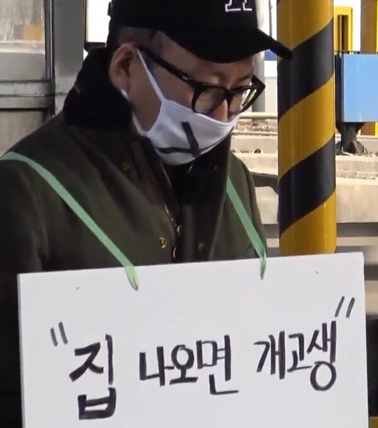
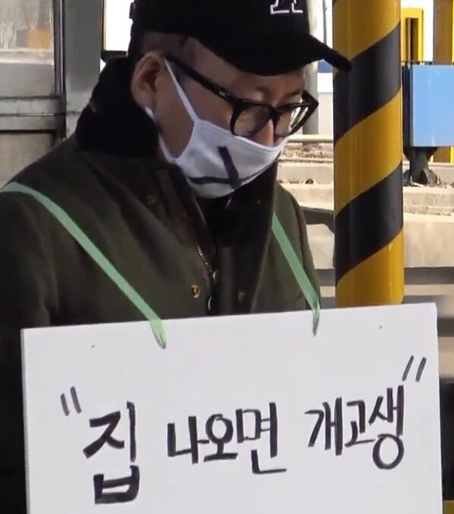

Hobby[3]-#Travel
#취미#여행#이집트
 

최근 새롭게 갖게 된 취미가 '여행'입니다. 성격상 집에만 있어도 행복하게 살 수 있는 집돌이이지만 한 친구를 따라 다녀온 어떤 여행 덕분에 여행이라는 것을 즐길 수 있게 되었습니다. 여행은 준비해야 할 것도 많고 계획도 필요하고 막상 가면 계획대로 진행되지도 않아, 그런 점이 상당히 귀찮고 지치며 포기하게 만듭니다. 하지만 여행은 항상 재밌든 힘들든 새로운 경험을 만들 수 있어 여행을 멈출 수 없는 것 같습니다.
제가 생각하는 여행이란 취미는 외국을 가거나 거창한 계획을 가지고 움직이는 것은 아닙니다. 멀지 않아도 거창한 곳이 아니어도 하루라도 어디든 하나의 경험이 될 수 있다면 밖으로 나가 새로운 곳을 여행하고자 합니다. 전 이미 타향에서 지내기에, 지하철을 타고 어디든 가고 어디를 보든 항상 여행하는 기분이 듭니다. 친구랑 같이 움직이든 혼자서 다니든 모두 괜찮습니다. 같은 곳이라도 누구와 가는지 혹은 혼자인지에 따라 각각의 매력을 느낄 수 있기 때문입니다.
그래서, 여행에 대한 생각이 바뀌었던 바로 그 여행을 소개하고자 합니다. 이는 얼마 되지 않은 올해 1월 쯤 이집트로 다녀온 여행이었습니다. 이집트는 정말 온나라가 문화유산이라 볼거리가 셀 수 없이 많지만, 인프라 자체는 우리나라에 비하면 많이 뒤처져 있는 국가이고, 삐끼가 많아 외국인 여행객 상대로 사기도 많은 나라입니다. 그때 전 가족들이랑 해외여행 다녀온 경험밖에 없었고, 가족 말고는 다른 누군가와 여행을 해본적도 없었습니다. 하지만 무턱대고 이집트 가자는 친구의 회유에 넘어가 정말 최소한의 정보만 가지고 가게 되었습니다.


이집트에 도착하자, 계획이 있다던 친구는 허물뿐인 계획만 가지고 있었고, 결국 우리는 가야할 곳은 많고 계획은 없으며 돈도 없는, 배낭여행자였습니다. 역시나 저흰 첫날부터 크게 사기를 당했고 매운맛을 느끼며 여행을 시작했습니다. 하지만 그 뒤로 별의별 일을 겪고 웅장한 문화유산과 자연경관도 보면서 정말 많은 추억을 쌓았습니다. 진짜 너무 체력적으로 힘들었고 돈 아낀다고 더욱 고생했지만, 지금까지도 찍어놓은 사진만 생생한 기억들 새록새록하고 평생 못 잊을 것 같은 값진 경험이었다고 생각합니다. 여행하며 견문을 넓힌다고 하는 말을 전 믿지 않았었지만, 이 여행을 통해 확실히 다양한 경험이 세상을 보는 눈을 바꾸고 나의 인생에 대해 되돌아볼 기회를 가졌다고 생각합니다.

여행을 좋아하게 된 계기가 이집트라는 엄청난 곳이었기에 유난히 감명 깊은 것일 수 있다고 어느정도 생각은 합니다만, 여행은 귀찮고 힘들거지만 시도해보면 그 이상의 가치와 추억을 가질 수 있는 것이라 생각합니다. 저야 뭐 여행에 대해서 아무것도 모를 때라서, 무지하기에 겁 없고 용감하게 시도했던 것 같습니다. 다시 간다고 생각하면 사실 좀 아찔하다라는 생각도 들긴 합니다. 그럼에도 불구하고, 여행을 떠올리면서 가기를 망설이는 분이 있다면 두려운 마음을 머릿속에서 지우고 용기내서 심플한 마음가짐으로 한 번쯤 도전해보셨으면 좋겠습니다!